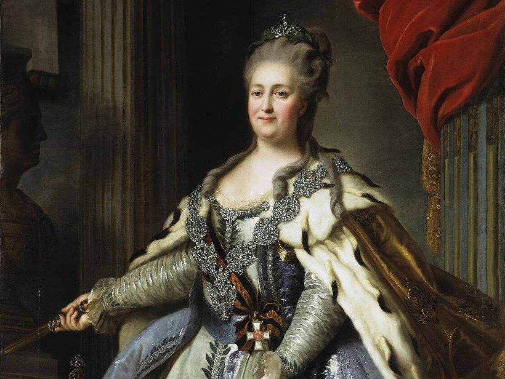
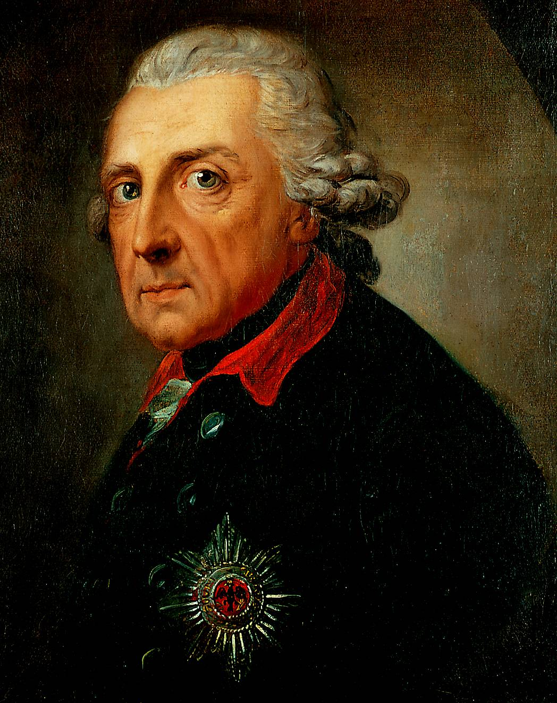

Rusia
Tras la muerte de Pedro II de Rusia llega al trono su hijo Pedro III, junto con Catalina II la Grande, su esposa, que mandó asesinar a su marido, quedando ella como zarina. Tuvo una política expansionista, por lo que hacia el final de su reinado, Rusia llegó a ser una de las grandes potencias europeas.
Alemania
El reinado de Federico II de Prusia supone una transición del sistema alemán al despotismo ilustrado, del cual este monarca es gran representante. Este sistema de gobierno se caracteriza por ser un gobierno autoritario que trata de instruir a su población. Para ello, Federico II, reune a un grupo de grandes científicos, filósofos y artistas, como Voltaire o Bach. Este fue el caso de Euler, cuya relación con el monarca termina debido a su actitud menos refinada y en muchos casos contraria a la de Voltaire.
Euler nace en Basilea, Suiza, en el seno de una familia de pastores. Su familia, tuvo relación con la familia de los Bernouilli, una importante familia de matemáticos europeos. Esto hace que Euler desarrolle cierto interés por la materia. Euler ingresa en la Universidad de Basilea, donde estudiaría fundamentalmente filosofía, junto con unas clases particulares que le impartía Johann Bernouilli. Más adelante, Euler viaja a San Petersburgo, donde ocuparía una plaza vacante en Fisiología en la Academia de Ciencias de Rusia. Más tarde, fue movido al departamento de matemáticas y ascendido. No obstante, la situación política tras la sucesión de la emperatriz Catalina I de Rusia, que había mantenido una política más bien progresista, se da una etapa más complicada para los científicos extranjeros, como Euler. En 1734 Euler contrajo matrimonio. Tuvo trece hijos, de los cuales solo cinco sobrevivieron. Debido a los problemas políticos, Euler decidió marcharse a Alemania, ingresando en la Academia de Berlín. Estando en esa ciudad publicó muchas de sus obras, y escribió numerosas cartas sobre temas filosóficos a la princesa de Prusia, por petición de su tío. No obstante, Euler se vio obligado a marcharse de Berlín por el deterioro de su relación con el rey de Prusia. Euler perdió la vista de su ojo derecho casi totalmente, debido a la observación del cielo, según decía. Esto no le impidió seguir trabajando, ni siquiera cuando fue diagnosticado de cataratas en su ojo bueno, quedando prácticamente ciego de ambos ojos. Fue determinante durante su última etapa su grandísima memoria, así como su cálculo mental, que le ayudaba a prescindir del papel. Cuando volvió a Rusia, la situación política había mejorado, por lo que consiguió un puesto en la Academia de San Petersburgo. Pierde su casa en un incendio en 1771 y a su esposa en 1773. Se vuelve a casar tres años más tarde. Euler muere de una hemorragia cerebral en 1783. Fue enterrado junto con su primera esposa en San Petersburgo.
Euler realizó aportaciones en multitud de ramas de las matemáticas, como la notación matemática, análisis, geometría, etc., así como en campos de la física. En la notación matemática, fue Euler quien popularizó algunas expresiones, como f(x) para designar una función f con una variable x, así como la letra i para representar la unidad imaginaria, entre otros símbolos. En análisis, Euler definió el conocido número e, que se corresponde con la base de los logaritmos naturales (o neperianos), además de ser el número que elevado a x es igual a su derivada en todo su dominio. Lo definió mediante una serie y, la notación más utilizada, como un límite. En geometría podemos destacar el descubrimiento de la recta de Euler, formada por el ortocentro, el circuncentro y el baricentro. En lógica, crea una representación gráfica, los diagramas de Euler. En física, podemos destacar sus aportaciones en cuanto a herramientas analíticas para la astronomía, así como la popularización de la idea de Huygens de la luz como onda, en óptica, que pervivió hasta el desarrollo de la teoría cuántica.
Euler es uno de los matemáticos más conocidos de la historia, y por supuesto, uno de los más importantes. Probablemente sea tan conocido gracias al número "e" (e=2,71828...), número irracional, y probablemente junto a π, y en menor medida φ, el número más importante de las matemáticas. Es por ello que, ya que probablemente sea un matemático que me resulta más familiar, y es de los más interesantes, he visto oportuno hablar sobre él. Además, a diferencia de Gauss, del que también hablamos en esta página, y que era muy cauteloso a la hora de publicar, para evitar fallos, Euler tuvo numerosísimas publicaciones, lo cual no hizo que fueran de menor calidad.